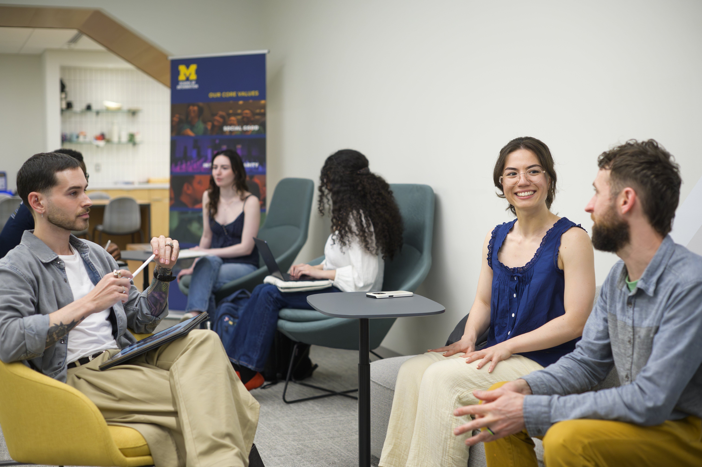

Navigating Your Active Project
Once your project is underway, your focus shifts from
preparing and establishing expectations to managing the work
as it develops. This stage involves staying organized,
communicating with your partner, gathering feedback,
conducting thoughtful research, and responding when plans
change.
Real-world projects rarely move in a perfectly straight line.
Requirements may shift, new information may emerge, and team
or partner needs may change. Learning how to respond
thoughtfully is an important part of the engaged learning
experience.

Why Adaptability Matters
The middle of a project is often where unexpected challenges
become visible. Research findings may change your team's
understanding of the problem, a partner may have new
constraints, or the original scope may need to be adjusted.
Instead of treating every change as a project failure, use
new information to make thoughtful decisions. Keep your team
and partner informed, revisit your goals when necessary, and
make sure your work continues to respond to the people and
needs connected to the project.
Managing and Executing the Work
During an active project, focus on several areas at the same
time. Good project management is not only about completing
tasks. It also involves communication, research, feedback,
teamwork, and ethical decision-making.
Manage Project Progress
Keep track of milestones, tasks, deadlines, and
responsibilities so your team knows what has been
completed and what still needs attention.
- Review project goals and upcoming milestones regularly.
- Assign clear responsibility for important tasks.
- Track deadlines and identify risks before they become urgent.
- Update the project plan when priorities or constraints change.
Communicate With Your Partner
Regular communication helps partners understand how the
project is progressing and gives your team opportunities
to ask questions before small problems become larger ones.
- Share progress updates at the agreed-upon frequency.
- Explain important changes to the project or timeline.
- Ask questions when requirements or expectations are unclear.
- Document important decisions and next steps.
Conduct Thoughtful Fieldwork and Research
When your project includes interviews, observations, or
other forms of research, use human-centered methods to
understand the experiences and needs of the people
connected to the work.
- Observe the context surrounding the problem.
- Record findings carefully instead of relying on memory.
- Look for patterns across interviews or observations.
-
Revisit assumptions when research does not support
what your team originally expected.
Continue Practicing Ethical Engagement
Ethical engagement does not stop once the project begins.
Continue considering who is affected by your decisions,
whose perspectives are represented, and whether the work
remains beneficial to the partner or community.
Use a Mid-Project Check-In
Set aside time during the project to evaluate whether your
original plan still makes sense. A check-in can help the team
notice problems early and make changes before the final stages
of the project.
Check Your Progress
- Are we still working toward the goals we agreed on?
- Are tasks and responsibilities clear within the team?
- Are we meeting important deadlines and milestones?
- Does the partner understand our current progress?
Check Your Understanding
- What have we learned since the project began?
- Have our assumptions changed?
- Are we responding to research and partner feedback?
-
Do we need additional information before making major
decisions?
Check the Partnership
- Is our communication process working?
- Does the partner have opportunities to provide feedback?
- Are expectations still realistic for both sides?
- Are there concerns that need to be discussed directly?

Build Feedback Into the Project
Feedback is most useful when there is still time to act on it.
Do not wait until the final deliverable to find out whether
the project is meeting the needs of your partner or intended
users.
-
Gather feedback:
Share work in progress with the appropriate people.
-
Understand the feedback:
Ask questions when comments are unclear and identify the
need behind the suggestion.
-
Evaluate it:
Consider the feedback alongside project goals, research,
constraints, and available time.
-
Decide what to change:
Prioritize changes that best support the project and the
people affected by it.
-
Communicate the decision:
Let teammates and partners know what changed and why.
When the Project Changes
Scope changes, conflicting feedback, missed deadlines, and
unexpected constraints can occur during engaged learning
projects. When something changes, avoid immediately jumping
to a new solution.
-
Identify what changed.
Separate the new issue from assumptions about what it
might mean.
-
Consider the impact.
Ask how the change affects the timeline, scope, users,
partner, and team.
-
Discuss it with the right people.
Important project changes should not be decided by one
person without communicating with the people affected.
-
Agree on the next step.
Decide whether to adjust the scope, timeline, task plan,
or another part of the project.
-
Document the decision.
Record what changed and why so the team and partner have
a shared understanding moving forward.
Featured Resources for Active Projects
These resources support common needs during the active phase
of an engaged learning project, including research, feedback,
communication, and project tracking.
Resources for managing an engaged learning project
| Category |
Resource |
Purpose |
| Observation and Needfinding |
HFLI AEIOU Worksheet for Observations |
Helps organize field observations around
activities, environments, interactions, objects,
and users.
|
| User Research |
HFLI User-Needs-Insights Worksheet |
Helps translate interview and observation data
into useful project insights.
|
| Feedback Management |
HFLI Feedback Worksheet |
Supports structured mid-project feedback between
students, instructors, and partners.
|
| Case Analysis |
Ginsberg Center Community Engagement Cases Handout |
Provides scenarios involving ethical challenges
and possible approaches to resolving them.
|
| Sponsor Tracking |
Sponsor Dashboard Template - Organizational Excellence |
Provides a high-level project status view for
keeping external partners informed.
|
| Communication Planning |
Student Project Communications Plan Example & Template |
Helps teams establish meeting schedules,
communication channels, and response expectations.
|
| Workflow Tracking |
Project Management Worksheet
|
Helps break project goals into milestones,
responsibilities, and task assignments.
|
Reflect While the Work Is Still Happening
Reflection is useful throughout the experience, not only at
the end. Periodically consider what you are learning and how
your approach is changing.
- What has been most challenging so far?
- What has changed since the project began?
- What feedback has influenced our decisions?
- How has our understanding of the problem changed?
- How effectively is our team working together?
-
What would we do differently during the next stage of
the project?
Need to Revisit an Earlier Stage?
Active projects sometimes reveal that a team needs to revisit
earlier decisions. Return to the preparation or starting
resources if you need to reconsider expectations, roles,
communication practices, or project scope.